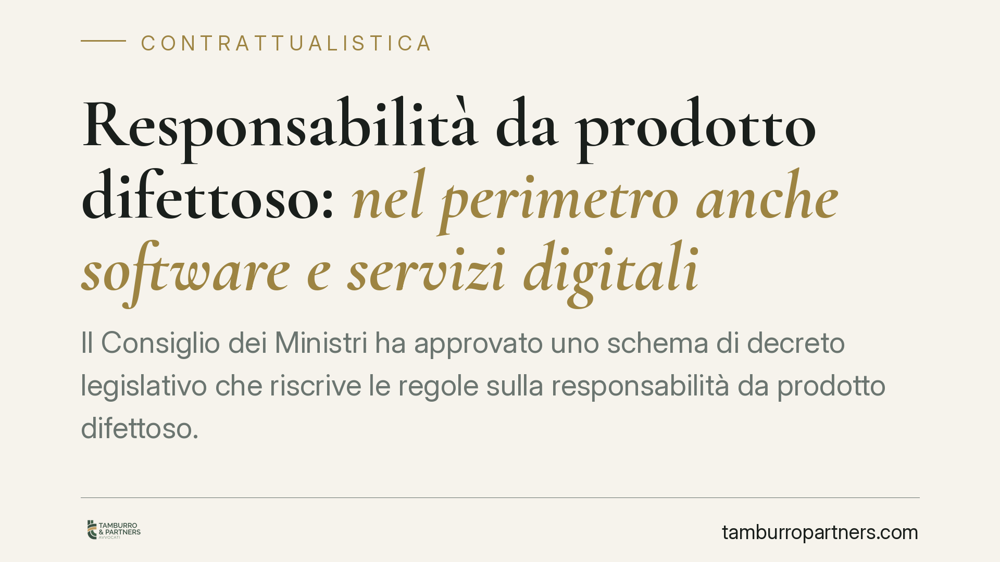

Responsabilità da prodotto difettoso: nel perimetro anche software e servizi digitali
Il Consiglio dei Ministri ha approvato uno schema di decreto legislativo che riscrive le regole sulla responsabilità da prodotto difettoso. La novità più rilevante: il concetto di prodotto ora comprende software e servizi digitali, con un ampliamento sensibile della platea dei soggetti responsabili. Per chi sviluppa o distribuisce tecnologia, cambiano gli scenari di rischio contrattuale e risarcitorio.

Il fatto
Lo schema di decreto legislativo approvato dal Consiglio dei Ministri recepisce la nuova disciplina europea sulla responsabilità per danno da prodotti difettosi. Il testo manda in archivio l'impianto risalente agli anni Ottanta, pensato per un'economia di beni fisici, e lo adatta a un mercato in cui il valore si sposta sempre più verso il software e i servizi.
Il punto centrale è la nozione di "prodotto". Finora riferita ai soli beni materiali, viene estesa a software, sistemi di intelligenza artificiale, file digitali e servizi connessi che condizionano il funzionamento del bene. Un difetto del codice, un aggiornamento mancato o un servizio digitale non sicuro possono quindi fondare una responsabilità risarcitoria.
Inquadramento normativo
La responsabilità da prodotto difettoso è una responsabilità oggettiva: il danneggiato non deve provare la colpa del produttore, ma soltanto il difetto, il danno e il nesso di causa tra i due. È uno dei regimi più severi del diritto civile, perché prescinde dalla diligenza di chi ha immesso il prodotto sul mercato.
Il nuovo schema amplia sia l'oggetto sia i soggetti. Sul primo versante, rientrano ora anche i beni immateriali: un software difettoso è equiparato a un componente meccanico guasto. Sul secondo, la platea dei responsabili si estende oltre il produttore in senso stretto: possono rispondere i fornitori di servizi digitali, chi modifica in modo sostanziale un prodotto già immesso sul mercato e, in certe condizioni, gli operatori che gestiscono piattaforme di distribuzione.
Rilevano inoltre il tema della sicurezza nel tempo: un prodotto può diventare difettoso anche dopo la messa in commercio, se il produttore mantiene il controllo tramite aggiornamenti e non fornisce le patch necessarie. Il mancato aggiornamento di sicurezza, in altre parole, può essere fonte di responsabilità.
Implicazioni pratiche
Per le imprese tecnologiche cambia il profilo di rischio. Una software house, un fornitore di servizi cloud o uno sviluppatore di sistemi di IA entrano in un'area di responsabilità finora riservata ai produttori di beni fisici. Non basta più la conformità del prodotto al momento del rilascio: occorre presidiarne la sicurezza lungo l'intero ciclo di vita.
L'ampliamento dei soggetti responsabili ha un riflesso diretto sui rapporti contrattuali lungo la catena di fornitura. Chi integra componenti software di terzi, o distribuisce prodotti altrui, può trovarsi esposto in via diretta verso il danneggiato, salvo poi rivalersi sul fornitore effettivo. Da qui l'importanza delle clausole di manleva e di ripartizione del rischio.
Anche il danno risarcibile tende ad allargarsi: accanto ai danni alla persona e ai beni, la nuova disciplina considera voci legate alla perdita o corruzione di dati, tema prima incerto.
Per i consumatori, il quadro migliora l'accesso alla tutela, in particolare grazie ad agevolazioni probatorie quando la complessità tecnica del prodotto rende difficile dimostrare il difetto.
Cosa fare in concreto
- Mappate i prodotti digitali a catalogo e verificate quali rientrano nella nuova nozione estesa di prodotto, inclusi software, servizi connessi e sistemi di IA.
- Rivedete i contratti di fornitura lungo tutta la catena: inserite o aggiornate clausole di manleva, limiti di responsabilità e obblighi di sicurezza a carico dei fornitori.
- Strutturate un processo di aggiornamento documentato, con gestione tempestiva delle patch di sicurezza, perché l'omissione può generare responsabilità successiva alla vendita.
- Verificate le coperture assicurative, controllando che le polizze product liability contemplino espressamente danni da difetti del software e da perdita di dati.
- Conservate la documentazione tecnica sulle scelte di progettazione e sui test, utile a ricostruire lo stato dell'arte al momento dell'immissione sul mercato.
Lo schema dovrà completare l'iter di approvazione, ma la direzione è tracciata. Consigliamo di avviare fin da ora la revisione dei modelli contrattuali e delle procedure interne, senza attendere l'entrata in vigore del testo definitivo.
---
*Contributo informativo a cura di Tamburro & Partners - Avv. Giuseppe Tamburro. Non costituisce parere legale.*
Ogni contratto ha il suo equilibrio.
Se vuoi una revisione delle clausole o una redazione su misura, scrivi allo studio. Ti rispondiamo entro un giorno lavorativo.